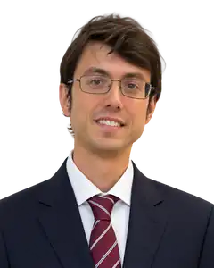
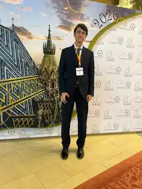

A
Chirurgia Plastica & Estetica
Pianificazione personalizzata per chirurgia della mammella, del volto, rimodellamento corporeo e procedure di revisione.
Professor Plastic Surgery
Chirurgia Plastica & Estetica e Microchirurgia del Linfedema, con un approccio che integra esperienza chirurgica avanzata, ricerca accademica e cura personalizzata.

01
Un approccio accademico e clinico alla moderna chirurgia plastica.
La mia attività integra chirurgia ricostruttiva ed estetica, microchirurgia, chirurgia linfatica e ricerca. Ogni percorso terapeutico nasce da una valutazione accurata, da una comunicazione chiara e dall’attenzione a funzione, proporzioni e qualità di vita.
02
A
Pianificazione personalizzata per chirurgia della mammella, del volto, rimodellamento corporeo e procedure di revisione.
B
Valutazione avanzata e trattamento microchirurgico, incluse anastomosi linfatico-venose e trasferimento vascolarizzato di linfonodi.
C
Ricostruzione personalizzata con attenzione all’anatomia, alla funzione e ai risultati a lungo termine.
03
Diagnosi, stadiazione e trattamento microchirurgico specialistico del linfedema.
Il mio approccio integra imaging linfatico, stadiazione funzionale e scelta terapeutica personalizzata. Il trattamento può includere anastomosi linfatico-venose o trasferimento vascolarizzato di linfonodi in base al singolo paziente e al singolo arto.
04
Un approccio raffinato fondato su anatomia, proporzione e risultati naturali.
05
Ricerca clinica orientata a migliorare le decisioni chirurgiche nella pratica quotidiana.
Gli interessi di ricerca comprendono imaging linfatico, sistemi di stadiazione, stratificazione terapeutica, microchirurgia ricostruttiva e risultati riferiti dai pazienti.

06
Per richieste cliniche, accademiche o professionali.
info@marcopappalardo.com